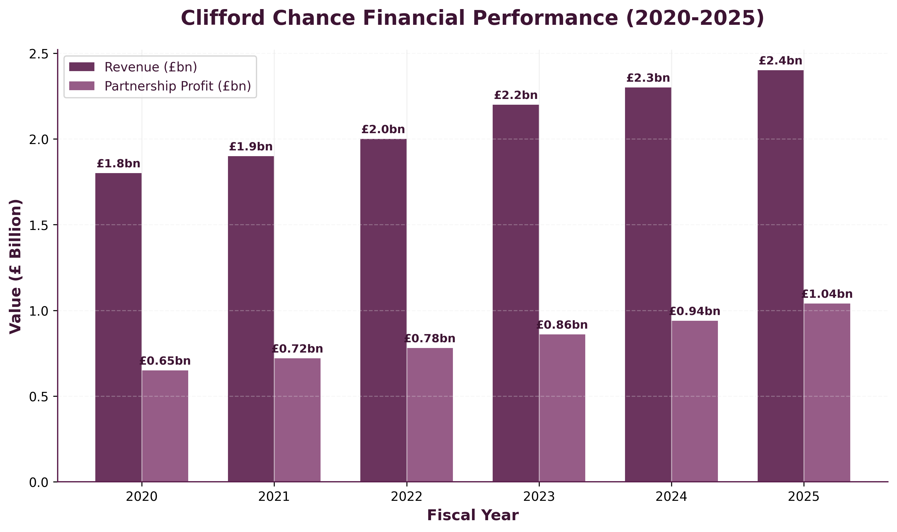
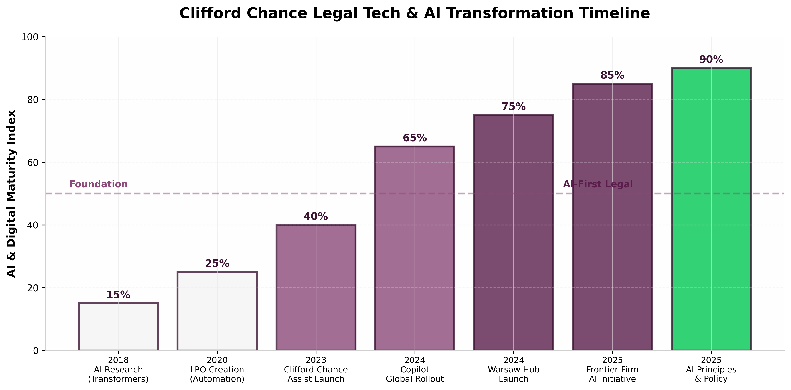
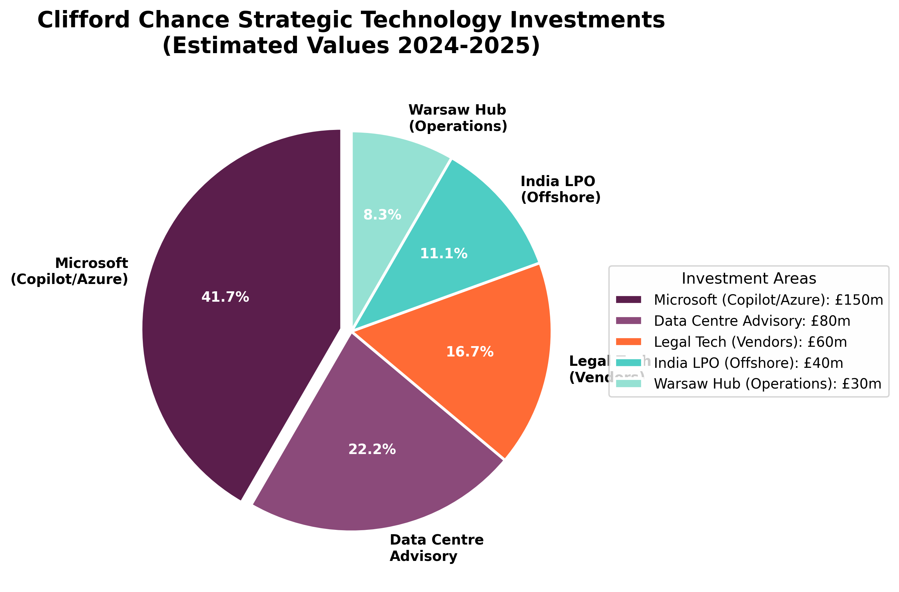
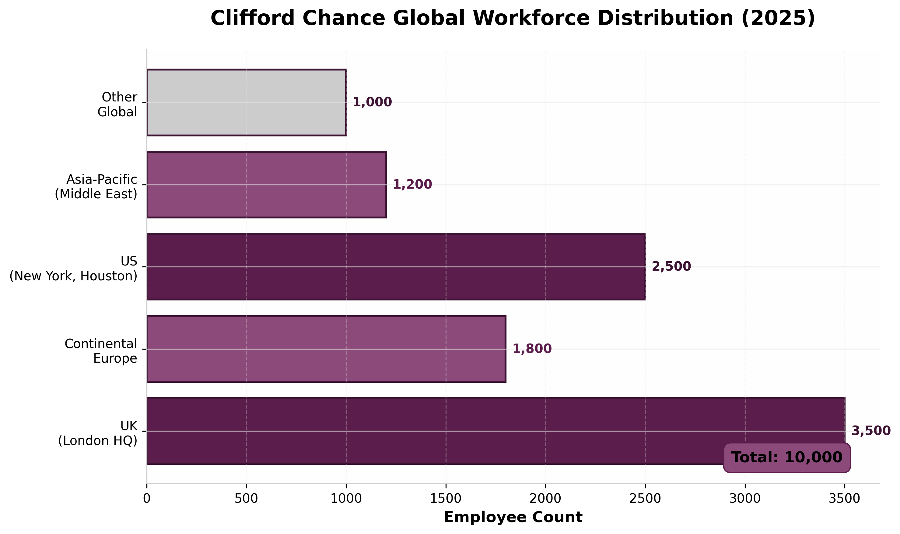

Strategic Intelligence Profile
& GTM Alignment
AI Workflow Automation & Data Center Services
Investment Thesis & Opportunity Assessment
"One Firm" Global Strategy Analysis
Executive Summary
Strategic Overview & Investment Highlights
Firm Profile
- Scale: £2.4bn revenue, 10,000+ employees, 34 offices in 23 countries
- Structure: Single global partnership (Magic Circle)
- HQ: 10 Upper Bank Street, Canary Wharf, London E14 5JJ
- Strategic Priority: "One firm" model - creating advantage for clients globally
- Digital Maturity: 90% AI adoption, 90% Copilot usage (7,000 employees)
Key Investment Thesis
- £2.4bn record revenue (2025) - 9% growth, £944m partnership profit
- £2.11m profit per equity partner - strong investment capacity
- First law firm to deploy Microsoft Copilot at scale globally
- AI Research since 2018 - published Transformers research (2019)
- Data Centre expertise - advising on £10bn UK AI data centre (Blackstone/QTS)
Financial Performance & Scale
6-Year Trajectory & Profitability Metrics

Source: Clifford Chance Annual Reports 2020-2025
Strategic Context
33% revenue growth since 2020. US expansion driving 18% revenue growth (2025) and 50% growth since 2023. Strong investment in technology and AI - "significant levels of investment in enhancing its technology platform including AI and associated skills."
Key Decision Makers & Org Structure
Leadership & Influence Mapping
Primary Targets
Charles Adams
Global Managing Partner (Re-elected 2025, term to 2030)
First non-UK based global chief (Milan). Driving "one firm" strategy. 18% US growth, £2.4bn revenue record. Dual qualified (Italy/UK).Paul Greenwood
Chief Technology Officer
Ex-McKinsey Head of Research. Created firm's LPO. Leading AI transformation, Copilot deployment. Board member, University of London.Adrian Cartwright
Global Senior Partner
Oversees partnership governance. Supported Charles Adams re-election. Focus on client experience and operational excellence.Technical Influencers
Bahare Heywood
Chief Risk & Compliance Officer
AI governance and risk framework lead. Co-architect of AI Principles & Policy. Ensures client consent protocols for AI deployment.Anthony Vigneron
Director of Legal Technology & Innovation
Leads legal tech innovation. Oversees Clifford Chance Assist and Copilot use cases. "Innovation groups" for AI agents.Access Strategy
Entry: Greenwood via Microsoft Frontier Firm AI Initiative or University of London board connections. Strategic: Adams via "one firm" technology investment narrative. Technical: Vigneron via legal tech innovation and AI agent development.
Technology Stack Architecture
Current State & AI Infrastructure
AI & Cloud Platform
| Layer | Technology | Status |
|---|---|---|
| Primary Cloud | Microsoft Azure (Strategic) | ● Enterprise Standard |
| AI Platform | Azure OpenAI (GPT-4) | ● Clifford Chance Assist Live |
| Productivity AI | Microsoft 365 Copilot | ● 90% Adoption (7,000 users) |
| Development | GitHub Copilot | ● Deployed |
| Employee Experience | Microsoft Viva Suite | ● Global Rollout |
| Legal Research | Clifford Chance Assist (Private AI) | ● 1,800+ Trial Users |

Infrastructure Notes
- AI Governance: Global AI Principles & Policy framework
- Client Consent: Required for AI use on client work
- Validation: All AI output reviewed by qualified lawyer
- Offshore: India LPO + Warsaw operational hub
- Data Centres: Advising on £10bn Blackstone/QTS project
AI & Legal Tech Transformation Timeline
From Transformers Research to Frontier Firm

Phase 1: Research & Foundation
2018-2020: Published Transformers research (2019), created LPO for automation, established data science team.
CompletePhase 2: AI Deployment
2023-2024: Clifford Chance Assist launch, Copilot global rollout (first law firm), Warsaw hub launch.
ActivePhase 3: Frontier Firm
2025+: Microsoft Frontier Firm AI Initiative, AI agents development, regulatory compliance automation.
OpportunityStrategic Investments & Ecosystem
Technology Partnerships & Vendor Landscape

Estimated investment values 2024-2025
Key Strategic Moves
| Investment | Scope | Strategic Impact |
|---|---|---|
| Microsoft Partnership | Copilot, Azure OpenAI, Viva Suite | 90% employee adoption, first law firm at scale |
| Data Centre Advisory | Blackstone/QTS £10bn UK project | Deep expertise in AI infrastructure, regulatory |
| India LPO | Offshore legal process outsourcing | Cost efficiency, 24/7 capability |
| Warsaw Hub | Operational hub (2024 launch) | Complements India/Newcastle hubs |
AI & Automation Initiatives
Clifford Chance Assist & Copilot at Scale
Clifford Chance Assist
Platform: Azure OpenAI (GPT-4)
Launch: 2023 (1,800+ trial users)
Status: Global rollout to all staff
- ✓ Private & secured AI tool
- ✓ Client consent framework
- ✓ Lawyer validation required
- ✓ Regulatory compliance focus
Microsoft Copilot Use Cases
Frontier Firm AI Initiative (2025)
Harvard Collaboration
Selected for Microsoft Frontier Firm AI Initiative with Harvard Digital Data Design Institute.
AI Agents Development
Grassroots "innovation groups" building prototype agents. "The lawyer of the future" working with AI agents.
Productivity Measurement
Working with initiative to measure Copilot productivity while upholding AI code and principles.
Global Regional Footprint
Office Network & Employee Distribution

Strategic Locations
| Region | Key Offices | Focus |
|---|---|---|
| UK (HQ) | London (Canary Wharf), Newcastle hub | Global HQ, Financial Markets |
| Continental Europe | Paris, Frankfurt, Milan, Madrid, Amsterdam | EU Law, Banking & Finance |
| US | New York, Washington DC, Houston (2023) | 18% revenue growth, 122 partners |
| Asia-Pacific | Singapore, Hong Kong, Tokyo, Shanghai, Sydney | 36% Middle East growth, 5% APAC |
Operational Hubs
Newcastle (UK): Operational hub
Warsaw (Poland): New hub (2024) - operational support
India: Legal Process Outsourcing (LPO)
Total: 34 offices across 23 countries
Strategic Opportunity Assessment
Immediate & Long-term Revenue Opportunities
🤖 AI Agent Infrastructure
Target: Paul Greenwood (CTO) + Anthony Vigneron
Pain: Grassroots innovation groups building agents need enterprise platform
Value: Scalable AI agent infrastructure for legal workflows
Hook: "The lawyer of the future" - agentic AI at scale
🏢 Data Centre Expertise Monetization
Target: Charles Adams (Global Managing Partner)
Pain: Advising on £10bn Blackstone/QTS project - internal infrastructure gap?
Value: Modernize firm infrastructure while advising clients on AI data centres
Hook: "Practice what you preach" - credibility in data centre advisory
⚡ Regulatory Compliance Automation
Target: Bahare Heywood (Chief Risk Officer)
Pain: Regulatory agent successful but needs expansion across jurisdictions
Value: Multi-jurisdictional compliance automation (34 offices, 23 countries)
Hook: 300-page PowerPoints now automated - scale to all regulatory changes
📊 Cross-Border AI Governance
Target: Bahare Heywood + Paul Greenwood
Pain: AI Principles & Policy need technical enforcement across global offices
Value: Automated AI governance, client consent tracking, audit trails
Hook: "Client consent required" - automated compliance framework
Go-to-Market Strategy
Account Entry & Positioning Framework
Recommended Approach
Message: "Frontier Firm AI infrastructure - scaling from grassroots to enterprise"
Channel: Microsoft Frontier Firm AI Initiative, University of London board
Message: AI agent platform for legal workflows, regulatory automation
Action: POC on regulatory compliance agent expansion
Message: "One firm" technology advantage - AI infrastructure for competitive differentiation
Metric: Lawyer productivity, client satisfaction, new service offerings
Competitive Positioning
- vs. Microsoft: Complement, not replace - specialized legal AI infrastructure layer.
- vs. Legal Tech Vendors: Differentiate via cross-border, multi-jurisdictional capabilities (34 offices).
- Differentiator: Understanding of Magic Circle firm structure, partnership governance, client confidentiality requirements.
Required Proof Points
- Legal sector AI case studies (agentic workflows)
- Multi-jurisdictional compliance automation
- Client confidentiality & data privacy expertise
- Microsoft Azure partnership status
- Professional services firm references
- AI governance & audit trail capabilities
Strategic Recommendations
Immediate Actions & Success Metrics
90-Day Action Plan
| Week | Action | Target | Success Metric |
|---|---|---|---|
| 1-2 | Engage via Microsoft Frontier Firm AI Initiative | CTO Office | Introduction to Greenwood secured |
| 3-4 | AI agent infrastructure demo for legal workflows | Legal Tech Innovation Team | Technical meeting booked |
| 5-8 | Regulatory compliance automation POC proposal | Chief Risk Officer | Scope defined for multi-jurisdiction pilot |
| 9-12 | Executive presentation: "One Firm" AI advantage | Global Managing Partner | Strategic partnership discussion |
Key Insight
"Clifford Chance has achieved what few professional services firms have - 90% AI adoption across 7,000 employees with robust governance. Their position as a 'Frontier Firm' in the Harvard/Microsoft initiative, combined with their £10bn data centre advisory work, creates a unique opportunity: they need AI infrastructure that matches their advisory expertise. The gap between advising clients on AI infrastructure and internal legacy systems represents the entry point."